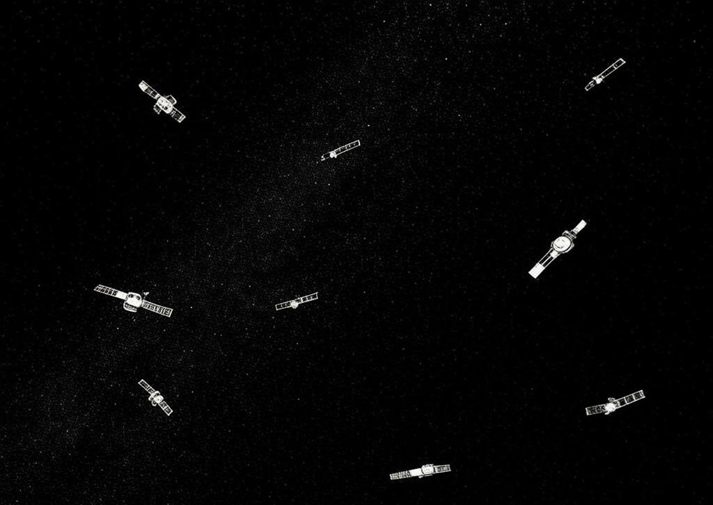

Welcome
Welcome Missions
Missions Launches
Launches Starlink
Starlink News & Updates
News & Updates Project: Mars
Project: Mars Gallery
Gallery About
AboutStarlink is SpaceX’s revolutionary satellite-based internet service that aims to provide high-speed, low-latency broadband internet access to underserved and remote areas around the globe. By deploying thousands of small satellites in low Earth orbit (LEO), Starlink ensures seamless connectivity even in the most challenging environments.

The Starlink satellite constellation in orbit.
Key Features of Starlink
- Global Coverage: Starlink provides internet access in rural, remote, and underserved areas worldwide.
- Low Latency: With satellites positioned in low Earth orbit, Starlink reduces latency to provide fast internet for gaming, video calls, and streaming.
- High Speeds: Starlink offers download speeds of up to 250 Mbps, rivaling traditional broadband services.
- Easy Setup: Users can install the Starlink kit, which includes a satellite dish and modem, for quick and seamless connectivity.
- Scalability: SpaceX plans to launch thousands more satellites to improve coverage and capacity worldwide.
Why Starlink?
Unlike traditional internet services that rely on cables and infrastructure, Starlink offers internet delivered from space, making it an ideal solution for:
- Remote areas without reliable internet infrastructure.
- Rural communities seeking affordable, high-speed access.
- Disaster-stricken areas requiring immediate communication solutions.
Learn More
To explore how Starlink works, pricing, and availability in your region, visit the official Starlink website: www.starlink.com
← Back to Home